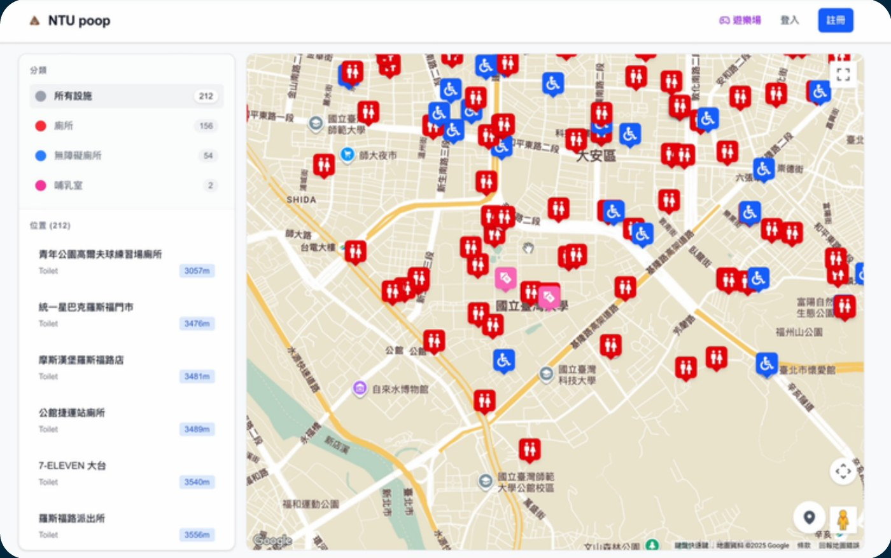

網頁系統 · Selected Work · 2026
校園地圖
NTU poop：一張標示校園周邊廁所、無障礙廁所與哺乳室位置的互動地圖， 收錄了 212 個地點，可依分類篩選、依距離排序，讓有急需的人能最快找到最近的設施。

要解決的問題
在校園裡臨時想找廁所、無障礙廁所或哺乳室，Google 地圖不一定標得完整， 也沒辦法一次篩選出「只看無障礙廁所」這種需求。這個專案把校園周邊這些設施 整理成一張可篩選、可依距離排序的互動地圖，讓有實際需求的人可以最快找到最近的地點。
功能設計
左側是分類篩選欄：所有設施、廁所、無障礙廁所、哺乳室，各分類旁邊直接顯示地點數量 （212 / 156 / 54 / 2），下方接著是依距離由近到遠排序的地點清單， 每筆都標出地點名稱、類型與距離。右側是主體地圖，用不同顏色的圖示（紅色廁所、藍色無障礙廁所、 粉色哺乳室）標出所有地點的實際位置，點擊篩選分類時地圖上的圖示也會同步過濾。
212
收錄地點總數
156
一般廁所
54 + 2
無障礙廁所 + 哺乳室
設計重點：這類「找設施」的工具，使用情境往往帶點急迫性—— 所以介面刻意把篩選與距離排序放在最顯眼的位置，讓使用者少點幾下就能找到最近的地點， 而不是先看一堆資訊再自己判斷。